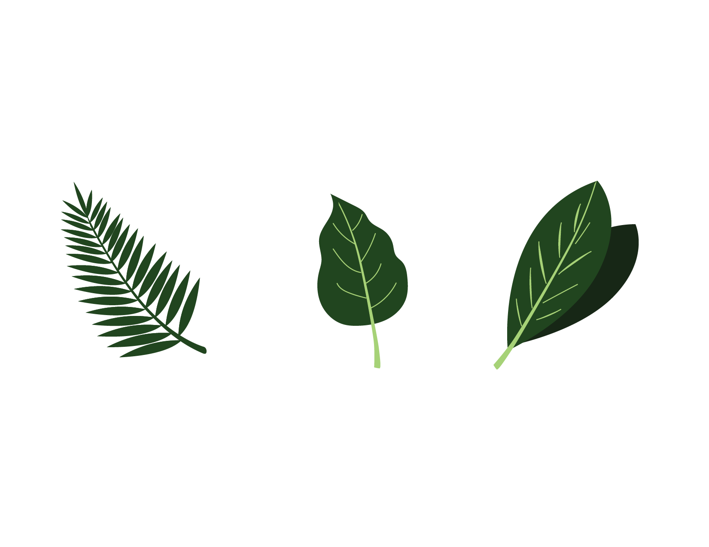

“Banh Chung” (Chung cake) is a traditional and irreplaceable cake
of Vietnamese people in the Tet Holidays. For the Vietnamese, making “Banh Chung”
is the ideal way to express gratitude to their ancestors and homeland.
So, today I’ll show you the step by step how to make this special cake.
First at all, we need glutinous rice and mung beans.
We also need the bamboo strips to bind Chung cakes.
Could you guess which leaves are using for Chung cakes?
Yes, it is number 3 and they are Dong leaves.
Now, you are ready to do Chung cakes. First at all, you lay out Dong leaves.
Secondly, putting sticky rice on the leaves.
Then, adding pork and mung beans.
After that, we continue
to add more beans and rice on the top of that.
Third, we wrap the Chung cakes with Dong Leaves
and
binds them with bamboo strings in the square form.
Finally, we boil Chung cakes in a big pot in 23 hours.